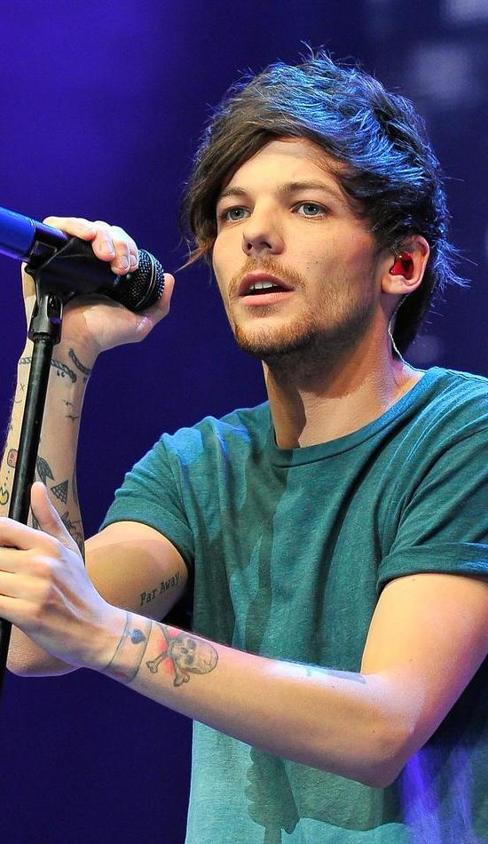

One direction artist biographies
Niall Horan
Niall Horan was born in the year 193 and fame kicked off after joining the one direction band After the band paused in the year 2016, he signed a deal with the capitol records for a solo hit. His album released in 2017 called flicker topped hitted in Ireland and US.
Liam Paynes
Liam Paynes was born in September 1993 and he is also a song writer. In the year 2008, he went for auditions at The X-Factor but unfortunately he was eliminated.. In the year 2010, he went for the auditions again and was put together to form one direction with thw other four. After the hiatus with the one direction, he joined Rebublic Records which is found in North America and they sign a recording deal.
Harry Styles

Harry is not only a singer and a song writer but he is also an actor.Like Liam Paynes, he has also contested in The X-Factor but was thrown out of the competition. Through Columbian Record, he released "Signs of the Times" in 2017 which aslo topped in the US Single Charts. He has managed to win a couple of awards which includes but not limited to Brit Award, American Music Award. His song Watermelon sugar topped US Billboard top 100.
Louis Tomlinson
Louis Tomlinson began his career as an extra cast in Tv shows in British. He was born in 1991 and he rose to fame in 2010 after joining the boys band, One Direction. After the hiatus if the group in 2016, he released Just Hold on as a solo song. The song went upto number two in the US Singles Chart. Louis aslo joined The X-Factor as the judge in 2019. He was the first former contestant to sit in the judge bench as a judge and also as a mentor. Initially, he had joined Doncaster Rovers as a footballer on basis which they were not contractual.